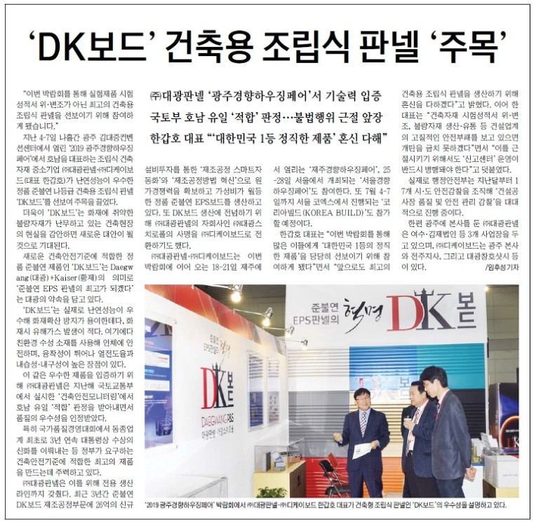

‘DK보드’ 건축용 조립식 판넬 ‘주목’
㈜대광판넬 ‘광주경향하우징페어’서 기술력 입증
국토부 호남 유일 ‘적합’ 판정…불법행위 근절 앞장
한갑호 대표 “‘대한민국 1등 정직한 제품’ 혼신 다해”
“이번 박람회를 통해 실험제품 시험성적서 위·변조가 아닌 최고의 건축용 조립식 판넬을 선보이기 위해 참여하게 됐습니다.”
지난 4-7일 나흘간 광주 김대중컨벤션센터에서 열린 ‘2019 광주경향하우징페어’에서 호남을 대표하는 조립식 건축자재 중소기업 ㈜대광판넬·㈜디케이보드(대표 한갑호)가 난연성능이 우수한 정품 준불연 나등급 건축용 조립식 판넬 ‘DK보드’를 선보여 주목을 끌었다.
더욱이 ‘DK보드’는 화재에 취약한 불량자재가 난무하고 있는 건축현장의 현실을 감안하면 새로운 대안이 될 것으로 기대된다.
새로운 건축안전기준에 적합한 정품 준불연 제품인 ‘DK보드’는 Daegwang(대광)+Kaiser(황제)의 의미로 ‘준불연 EPS 판넬의 최고가 되겠다’는 대광의 약속을 담고 있다.
‘DK보드’는 실제로 난연성능이 우수해 화재확산 방지가 용이한데다, 화재시 유해가스 발생이 적다. 여기에다 친환경 수성 소재를 사용해 인체에 안전하며, 융착성이 뛰어나 열전도율과 내습성·내구성이 높은 장점이 있다.
이 같은 우수한 제품을 입증하기 위해 ㈜대광판넬은 지난해 국토교통부에서 실시한 ‘건축안전모니터링’에서 호남 유일 ‘적합’ 판정을 받아내면서 품질의 우수성을 인정받았다.
특히 국가품질경영대회에서 동종업계 최초로 3년 연속 대통령상 수상의 신화를 이뤄내는 등 정부가 요구하는 건축안전기준에 적합한 최고의 제품을 만드는데 주력하고 있다.
㈜대광판넬은 이를 위해 전용 생산라인까지 갖췄다. 최근 3년간 준불연 DK보드 제조공정부문에 26억의 신규 설비투자를 통한 ‘제조공정 스마트자동화’와 ‘제조공정방법 혁신’으로 원가경쟁력을 확보하고 가성비가 월등한 정품 준불연 EPS보드를 생산하고 있다. 또 DK보드 생산에 전념하기 위해 ㈜대광판넬의 자회사인 ㈜대광스치로폴의 사명을 ㈜디케이보드로 전환하기도 했다.
㈜대광판넬·㈜디케이보드는 이번 박람회에 이어 오는 18-21일 제주에서 열리는 ‘제주경향하우징페어’, 25-28일 서울에서 개최되는 ‘서울경향하우징페어’도 참여한다. 또 7월 4-7일까지 서울 코엑스에서 진행되는 ‘코리아빌드(KOREA BUILD)’도 참가할 예정이다.
한갑호 대표는 “이번 박람회를 통해 많은 이들에게 ‘대한민국 1등의 정직한 제품’을 당당히 선보이기 위해 참여하게 됐다”면서 “앞으로도 최고의 건축용 조립식 판넬을 생산하기 위해 혼신을 다하겠다”고 밝혔다. 이어 한 대표는 “건축자재 시험성적서 위·변조, 불량자재 생산·유통 등 건설업계의 고질적인 안전부패를 보고 있으면 개탄을 금치 못하겠다”면서 “이를 근절시키기 위해서도 ‘신고센터’ 운영이 반드시 병행돼야 한다”고 덧붙였다.
실제로 행정안전부는 지난달부터 17개 시·도 안전감찰을 조직해 ‘건설공사장 품질 및 안전 관리 감찰’을 대대적으로 진행 중이다.
한편 광주에 본사를 둔 ㈜대광판넬은 여수·김제법인 등 3개 사업장을 두고 있으며, ㈜디케이보드는 광주 본사와 전주지사, 그리고 대광창호샷시 등이 있다./임후성 기자